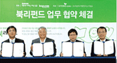
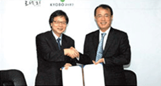
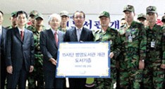

읽는 사회 만들기 - '북리펀드', 독서대학 '르네21' 등
교보문고는 네이버, 한국출판인회의, (사)작은도서관만드는사람들과 함께 ‘북리펀드’사업을 2008년 9월 1일부터
시작했습니다. 전국 교보문고 영업점에서 북리펀드 대상 도서를 구입하고 기간 내에 반납하면 책값의 50%를 돌려받고
나머지 50%는 산간벽지의 도서관 건립에 후원금으로 사용되는 사회공헌 프로그램 입니다.

독서대학 '르네21' 공익파트너 협약
교보문고는 독서대학 ‘르네21’과 2008년 9월 1일 공익파트너 협정식을 갖고 인문적 독서운동을 통한 성찰과 소통의 삶을
추구하는 인문학 부흥 운동에 동참했습니다. 공익파트너 협약은 독서 진흥을 통한 공공성 추구의 길을 열었다는 점에서 큰
의의를 갖습니다. 이는 물질주의에 경도된 현 세태에 ‘가치있는 삶’의 의미를 일깨워줄 소중한 출발점입니다.

책 읽는 군대 만들기
교보문고는 1999년부터 병영도서관 건립운동을 시작해, 현재 20곳의 병영도서관을 만드는 데 도서를 지원했습니다. 격월로
약 2,000권의 도서를 지원하고‘하루 30분 책읽기 운동’,‘독서 수첩 제작 배포’등의 운동을 펼치고 있습니다. '책 읽는 군대 만들기’의
일환으로 책과 문화 가 있는 병영생활을 지원하고자 장병들에게 양 서를 읽을 수 있는 독서환경을 제공합니다.
교보문고는 국내 뿐 아니라 해외 석학을을 위한 도서지원사업도 활발히 전개하고 있습니다.
대산문화재단과 함께 매년 해외 한국 문학연구에 대한 지원을 진행하고 있으며
해외 각국의 International School 내 한국 학생 도서지원 및 한국을 알리기 위한 국문 도서 보급 사업도 진행합니다.
Wien대 (오스트리아)
조선후기 전의 소설적 성향 연구 등 418권
Stockholms대(스웨덴)
「김지하시선집」 등 209권
延邊科學技術大(중국)
「백두산」 등 101권
college de France 한국학센터(프랑스)
문학계간지 「창작과비평」 등 264권
延邊大醫學院(중국)
「한국학대백과사전」 등 260권
하와이대 도서관(미국)
「한국현대소설의 해설」 등 962권
시카고대 도서관(미국)
「우리나라 근대인물사」 등 7종 117권 및 「조선시대 사상사의 재조명」 등 15종 15권
멕시코대 Center for Asian and African Studies(멕시코)
「개화기문학론」 등 311종 417권 「조선시대 사상사의 재조명」 등 15종 15권
시드니대 도서관(호주)
「18세기 가사전집」 등 61종 61권 「조선시대 사상사의 재조명」 등 15종 15권
홈볼트대 Seminar fur Koreanistkd(독일)
「갯마을」 등 153종 153권 및 「조선시대 사상사의 재조명」 등 15종 15권
큐슈대 언어문화부 한국어과(일본)
「한국소설문학 100년의 역사」등 16종 110권, 「조선시대 사상사의 재조명」 등 15종 15권
모스크바대 The International Center For Korean Studies(러시아)
「동북민족원류」 등 18종 18권 및 「조선시대 사상사의 재조명」 등 15종 15권
컬러비아대 C.V. Star East Asian Library(미국)
「한국문집총간」 총 200권
워싱턴대 도서관(미국)
「한국역대문집총서」
Moon’s Book Club(미국)
「만해 한용운 시선」 등 총 81권
교보문고는 언제나 더 나은 고객서비스를 생각합니다.